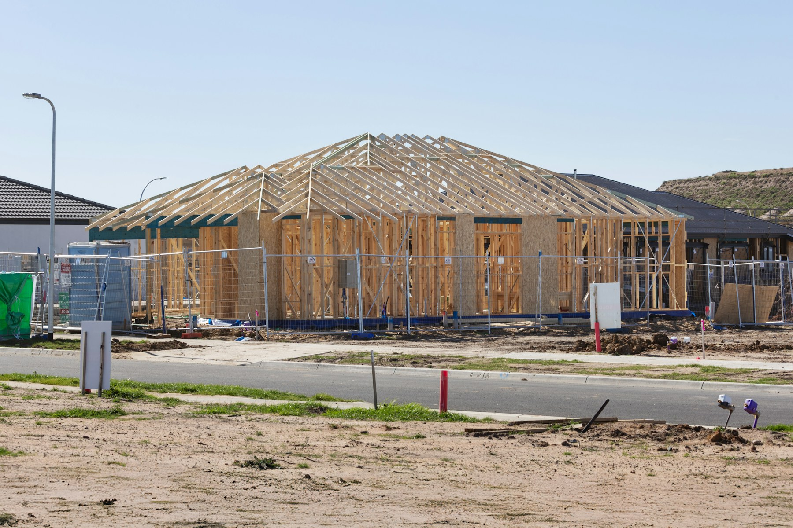
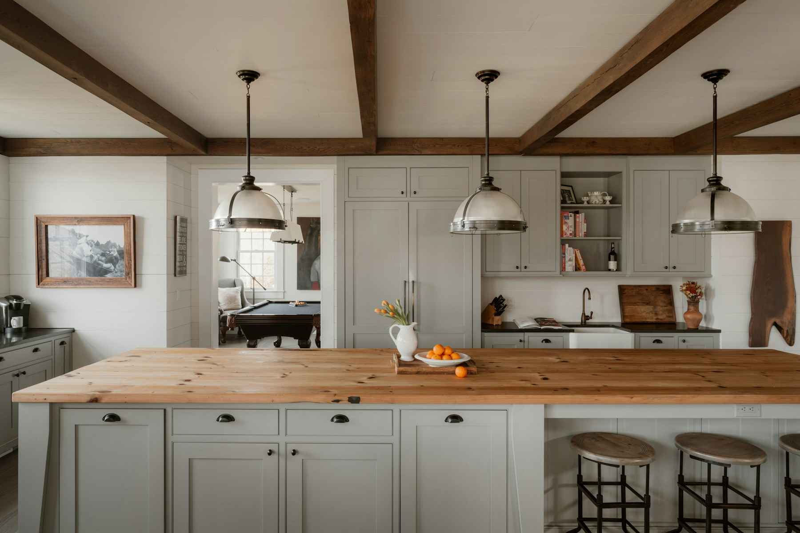

01 / EMPRESA · SI ES NECESARIO
Creación de empresa
Da estructura a tu inversión con apoyo para constituir tu empresa y atender su contabilidad y obligaciones fiscales, según el servicio contratado.
 UNARA
UNARA

UNARA / INVERSIÓN INMOBILIARIA EN ESTADOS UNIDOS
Construye patrimonio en dólares, con un equipo que te acompaña desde México. Coordinamos a los especialistas, del terreno a la venta o renta, para que inviertas con una visión completa.
Descubre tu camino para invertirTU PATRIMONIO, MÁS ALLÁ DE MÉXICO
Dar el paso a Estados Unidos empieza por saber con quién cuentas.
Con UNARA tienes un punto de contacto que coordina a los especialistas y te ayuda a entender los números, seguir el proyecto y tomar cada decisión.
UNARA te acompaña en todo el camino.
* Servicios opcionales según tu objetivo y situación.
01–02 / PREPARACIÓN SEGÚN TU CASO
Prepara tu inversión según tus objetivos. Si necesitas crear una empresa o explorar una vía migratoria, te conectamos con el especialista correspondiente. Son procesos independientes.
01 / EMPRESA · SI ES NECESARIO
Da estructura a tu inversión con apoyo para constituir tu empresa y atender su contabilidad y obligaciones fiscales, según el servicio contratado.
02 / MIGRACIÓN · SI ES NECESARIO
Conoce qué opciones podrían aplicar a tu caso con una evaluación especializada. Invertir por sí solo no garantiza una visa.
Desde el primer paso, ten a la mano los avances, documentos y decisiones de tu inversión.
 FOTOGRAFÍA DE REFERENCIA / RESIDENCIAL
FOTOGRAFÍA DE REFERENCIA / RESIDENCIAL03 / OBJETIVO Y TERRENO
¿Buscas desarrollar para vender o construir patrimonio para rentar? Partimos de tu presupuesto y horizonte de inversión para que Northreach busque oportunidades alineadas contigo.
La ubicación importa. También lo que puedes construir y a qué precio podrías vender o rentar. Evaluamos el terreno con el proyecto completo en mente.
04 / ANTES DE COMPROMETER CAPITAL
Una oportunidad debe tener sentido para tu capital. Evaluamos qué se puede construir, cuánto requiere y cómo podría venderse o rentarse antes de decidir la compra.
UNARA / CRITERIO DE INVERSIÓNDE PLANO A INMUEBLE
Tu proyecto avanza con especialistas y responsabilidades claras: UNARA te acompaña, Northreach coordina, Umber diseña los interiores y Amplify construye.
06 / VISIBILIDAD DURANTE LA OBRA
Sigue tu inversión desde México con fotografías, avances y próximos pasos en el portal de obra de Amplify. UNARA y Northreach dan seguimiento para que sepas dónde está tu proyecto y qué necesita de ti.
Trabajos ejecutados y fotografías.
ACTUALIZACIÓN SEMANALAvance y próximos trabajos.
ACTUALIZACIÓN SEMANAL
Documentos y acuerdos del proyecto.
ARCHIVOS DEL PROYECTOCUANDO ALGO CAMBIA
Qué cambia y por qué.
Opciones, costo y plazo.
Tu autorización queda documentada.
07 / CUANDO EL INMUEBLE ESTÁ LISTO
Desarrollar para vender o conservar para recibir rentas en dólares. Planeamos ambas rutas desde el inicio y te ayudamos a compararlas con los números del proyecto.
FOTOGRAFÍA DE REFERENCIA / RESIDENCIALPrecio, renta y retorno dependen del mercado y los costos reales. Son proyecciones, no garantías.
UNA DIRECCIÓN, VARIOS ESPECIALISTAS
UNARANo tienes que coordinar por tu cuenta a cada proveedor. UNARA conecta las especialidades y te acompaña durante el proceso; cada firma ejecuta los servicios de su área.
RESIDENCIAL / FLEX COMERCIAL
Explora vivienda y espacios comerciales Flex. Conoce cómo funciona cada modelo y qué requiere para dar el siguiente paso.
¿Cómo se vería tu inversión? Explora cuánto aportarías y compara vender o conservar.
Explorar mi inversión